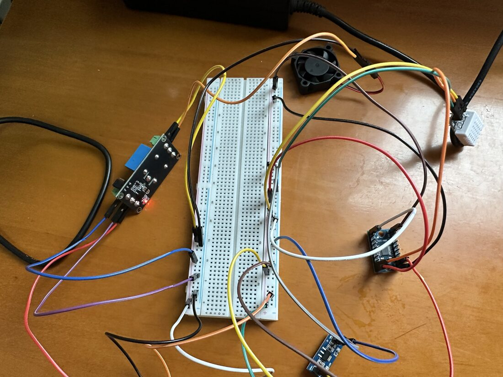
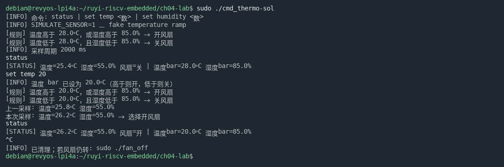

本章实验 · 串口命令温控
说明
select 主循环；在 SSH 里一边看自动控温，一边敲 status / set。你能学到什么：命令表怎么把一行字派到函数；用
select 让「采样」和「打字」同时及时；温湿度联合阈值如何驱动风扇。
讲义已讲清：字节进出、为何要 TXS、命令表思路、select 机制。本实验递进：整板接线 + 你自己写出可跑的对话层。
- 工程：
chapters/ch04/code/（板上：~/ruyi-riscv-embedded/ch04-lab/） - 学生文件：
cmd_thermo.c（默认make） - 参考实现：
cmd_thermo-sol.c（make sol；先自己写，过关后再对照） - 脚：风扇 IO1_5；DHT22 IO1_6（经 TXS）
- 打字入口：SSH 终端标准输入（本课不另接物理串口线）
make 通过；后台静默采样控风扇；敲 status 立刻打出当前温湿度；set 改阈值立刻生效；打字时自动控温不停。
实验器材
| 东西 | 用途 |
|---|---|
| 荔枝派 4A | 跑 Linux；排针接线 |
| DHT22 模块 | 真温湿度输入 |
| TXS0108E | 1.8 V ↔ 3.3 V 电平转换（排针需焊接） |
| AMS1117-1.8V 小板 | 给 TXS 低压侧（VA）供电 |
| 继电器 + 风扇 + 杜邦线 | 沿用第三章 |
chapters/ch04/manuals/——DHT22_规格书.pdf、AHT20 产品手册 a2 2020-8-11.pdf、AMS1117-1.8V降压小板.md。
接线与焊接

先焊 TXS 排针：烙铁预热 → 排针插孔 → 背面逐脚上锡 → 检查连锡。
| 从 | 到 | 说明 |
|---|---|---|
| 排针 3.3V | DHT22 正（VCC） | 传感器供电 |
| 排针 GND | DHT22 负（GND）；TXS / AMS 共地 | 共地 |
| DHT22 OUT | TXS B1 | 高压侧 3.3 V |
| TXS A1 | 排针 IO1_6 | 低压侧 1.8 V |
| AMS1117 IN | 排针 3.3V | 降压输入 |
| AMS1117 OUT | TXS VA | 低压侧电源 1.8 V |
| 排针 3.3V | TXS VB | 高压侧电源 |
| TXS OE | 接高 | 使能 |
继电器 / 风扇保持第三章：IO1_5 直连信号端，风扇走 NO–COM。
打开 cmd_thermo.c，确认 GPIO_CHIP_PATH、DHT_LINE=6、FAN_LINE=5。首次联调建议保持默认 SIMULATE_SENSOR=1（假温度升降）；接好真 DHT 并稳定后再用 -DSIMULATE_SENSOR=0 重编。
本步成功判据：能指着线说出「地 / TXS A·B / VA·VB / IO1_6」；知道当前是模拟还是真传感器。
实现命令与 select
打开 cmd_thermo.c。脚手架已提供 DHT 读取、风扇、sample_and_control、read_command_line、main。只改标了 STUDENT TODO 的区块：在该注释与 read_command_line 之间写出命令函数、命令表、dispatch_command、main_loop。
先直接 make：应看到类似 implicit declaration of function 'dispatch_command' 或 main_loop——这是预期起点。
你要写的契约
/* 打印 g_st：用 [STATUS] 前缀输出温度、湿度、风扇、温度bar、湿度bar。 * 尚无采样（has_sample==0）时打印明确提示，不要打垃圾数。 * 注意：采样函数本身不刷温湿度；只有本命令才打印。 * args 可忽略。成功返回 0。 */ static int cmd_status(char *args); /* 解析 args："temp <数>" 或 "humidity <数>"（也可用 hum）， * 写入 g_st.t_bar / g_st.h_bar。用法错误打印 [ERR]。成功打印确认并返回 0。 * 逻辑：温度或湿度高于对应 bar → 开风扇；两者都低于 → 关风扇。 */ static int cmd_set(char *args); struct cmd_entry { const char *name; int (*handler)(char *args); }; /* 至少注册 status / set，表尾 { NULL, NULL } */ /* 拆出命令名与参数；查 g_cmds 并调用。 * 空行返回 0；未知命令打印 [ERR] unknown command，返回非 0。 * 进程不要因此 exit。 */ static int dispatch_command(char *line); /* 用 select 同时等： * · cmd_fd（stdin）可读 → 调用已有的 read_command_line() * · 距下次采样超时 → 调用已有的 sample_and_control() * 用墙上时钟维护 deadline / remain，处理命令后不要把采样周期整段重置。 * g_running 为 0 时退出循环。 */ static void main_loop(void);
写的时候要想清楚
dispatch_command为什么先拆词再查表，而不是一长串if/else？加一条help时你改哪里？set改的是内存里的阈值：下一轮sample_and_control才会用上——如何用实验证明「立刻参与后续控温」？- 阻塞在
fgets上，或固定sleep(2)再读命令，分别饿死哪一边？ - 处理完一条命令后若把超时重新设成完整 2 秒，采样节奏会怎样？
- 脚手架里开风扇条件含「湿度 > 湿度 bar」：模拟模式湿度恒为 55，主要靠温度演示；真 DHT 时可哈气看湿度支路。
cmd_fd 在 main 里已设为 STDIN_FILENO。
cmd_thermo-sol.c。make sol 得到 cmd_thermo-sol。建议过关后再打开；卡住超过一刻钟再对照某一个函数。
编译运行
主路径与第三章相同：在 x86 Linux 激活 venv-gnu-ruyisdk 后交叉编译，再拷到荔枝派运行；或在荔枝派上直接 make（Makefile 按机器自动选择编译器）。访问 GPIO 需要 sudo。编译的是你自己写的 cmd_thermo.c。
# —— 在 x86 Linux 上 —— $ . ~/venv-gnu-ruyisdk/bin/ruyi-activate $ cd chapters/ch04/code $ make clean && make $ file cmd_thermo # —— 在荔枝派上 —— $ cd ~/ruyi-riscv-embedded/ch04-lab $ make clean && make $ sudo ./cmd_thermo # 模拟模式验证通过、接好真 DHT 后，改用： $ make clean && make CFLAGS='-Wall -Wextra -O2 -DSIMULATE_SENSOR=0' $ sudo ./cmd_thermo
先用默认模拟模式跑通软件流程；接真 DHT 时务必带上 -DSIMULATE_SENSOR=0。对照参考实现（助教自检）：make sol fan-off。
联调验收

make sol（真 DHT）：产物为 RISC-V；status 读出温湿度；set temp 20 后选择开风扇- 启动后等几秒（让 DHT 先采到样），敲
status：应出现[STATUS] temp=… hum=…；平时终端不应刷温湿度。 - 敲
status：立刻打印完整状态（或「尚无采样」提示）。 - 敲
set temp 30，再status：温度 bar 已变。 - 敲
set humidity 80，再status：湿度 bar 已变。 - 控温进行中连续敲
status：每次立刻出现[STATUS]；风扇开/关瞬间打印上一采样与本次采样（无[STATUS]前缀）及「选择开/关风扇」。 - （可选，真 DHT）哈气提高湿度，观察是否按湿度 bar 开风扇。

status 时风扇=关；set temp 20 后本次采样选择开风扇；再 status 显示风扇=开kill -9 / 崩溃后风扇一直转：make fan-off && sudo ./fan_off（默认保持拉低直到 Ctrl+C；--once 只脉冲一次）。
常见故障
| 现象 | 先查什么 |
|---|---|
implicit declaration / 编译不过 | 四个符号是否写在 read_command_line 上方？签名是否与契约一致？ |
| 能编译，敲命令没反应 | main_loop 是否把 cmd_fd 放进 select？是否调用了 read_command_line？ |
| 命令有回复，风扇不再动作 | 是否卡在阻塞读或固定 sleep？超时分支是否调用 sample_and_control？ |
真 DHT 一直 [ERR] | TXS 焊接、VA/VB、OE、共地、IO1_6；先 SIMULATE_SENSOR=1 验证软件 |
| Permission denied | sudo ./cmd_thermo |
验收表
| 验收项 | 通过条件 | □ |
|---|---|---|
| 接线 | DHT 经 TXS 到 IO1_6；风扇沿用第三章 | |
| 自己写的代码 | 命令 + dispatch + main_loop 在学生文件中；make 通过 | |
| 自动控温 | 超温（或超湿）开 / 回落关可演示 | |
| status / set | 立刻回复；可改温度 bar 与湿度 bar | |
| 同时工作 | 打字时采样不停更 |
select 返回 0 与返回正数各走哪条路。